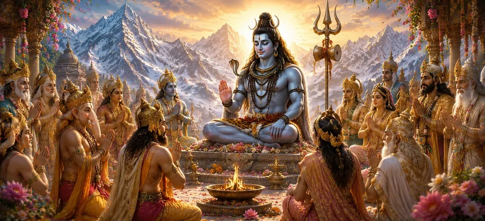

इस अध्याय में वर्णन किया गया है कि कैसे देवता, भगवान शिव की सर्वोच्च शक्ति और करुणा को पहचानकर, उनकी प्रार्थना और स्तुति करने के लिए एकत्रित होते हैं। चुनौतियों और अनिश्चितताओं का सामना करते हुए, वे महादेव की शरण लेते हैं, जिनकी कृपा से ब्रह्मांड कायम है और सभी प्राणियों को धर्म और मुक्ति की ओर मार्गदर्शन मिलता है।
जैसे-जैसे घटनाएँ दैवीय नियति के अनुसार घटित हुईं, देवता दुनिया के कल्याण के बारे में अधिक चिंतित हो गए। यह समझते हुए कि केवल भगवान शिव के पास ही सृष्टि की चुनौतियों के माध्यम से मार्गदर्शन करने के लिए आवश्यक ज्ञान और शक्ति है, उन्होंने अपने विचारों को उनकी ओर मोड़ दिया।
देवगण श्रद्धा और भक्ति के साथ एकत्र हुए। एकजुट होकर, उन्होंने पवित्र भजन तैयार किए जो शिव को शाश्वत भगवान, अज्ञानता के विनाशक और सभी आध्यात्मिक ज्ञान के स्रोत के रूप में मनाते थे।
देवताओं ने ब्रह्मांड के निर्माता, रक्षक और ट्रांसफार्मर के रूप में शिव की स्तुति की। उन्होंने उनकी असीम करुणा, समय और मृत्यु पर उनकी महारत और भक्तों की शरण के रूप में उनकी भूमिका की महिमा की। उनकी प्रार्थनाएँ उनके दिव्य ज्ञान में पूर्ण विश्वास दर्शाती थीं।
स्तुति से परे, देवताओं ने भविष्य के लिए मार्गदर्शन मांगा। उन्होंने प्रार्थना की कि शिव उस मार्ग को प्रकट करेंगे जो दुनिया के कल्याण को सुनिश्चित करेगा और उस दिव्य उद्देश्य को पूरा करने में मदद करेगा जो धीरे-धीरे पार्वती के भाग्य के माध्यम से सामने आ रहा था।
सच्ची भक्ति हृदय को दैवीय कृपा के लिए खोल देती है।
भगवान शिव पर भरोसा अनिश्चितता के दौरान शक्ति प्रदान करता है।
ईश्वर सच्चे साधकों को सही मार्ग बताते हैं।
देवताओं की संयुक्त प्रार्थनाएँ उस आध्यात्मिक शक्ति को प्रदर्शित करती हैं जो तब उत्पन्न होती है जब कई हृदय एक ही दिव्य उद्देश्य पर ध्यान केंद्रित करते हैं। उनकी सामूहिक भक्ति ने उनके संकल्प को मजबूत किया और भगवान शिव का आशीर्वाद प्राप्त किया।
अपनी हार्दिक स्तुति करने के बाद, देवताओं ने विश्वास और धैर्य के साथ शिव की प्रतिक्रिया की प्रतीक्षा की। वे जानते थे कि उनकी बुद्धि सभी सीमाओं से परे थी और उनके निर्णय हमेशा ब्रह्मांड के सर्वोत्तम हित के लिए थे।
यह अध्याय सिखाता है कि प्रार्थना केवल मदद के लिए अनुरोध नहीं है बल्कि विश्वास, भक्ति और समर्पण की अभिव्यक्ति है। सच्ची पूजा के माध्यम से, भक्त स्वयं को दिव्य ज्ञान के साथ जोड़ते हैं और जीवन की चुनौतियों का सामना करने की शक्ति प्राप्त करते हैं।
अपने भजनों में, देवताओं ने शिव को सर्वोच्च शासक के रूप में महिमामंडित किया जो सृजन, संरक्षण और विनाश से परे मौजूद है। उन्होंने स्वीकार किया कि सभी ब्रह्मांडीय शक्तियां उनकी दिव्य इच्छा के तहत काम करती हैं और प्रत्येक प्राणी अंततः उनकी कृपा पर निर्भर करता है। उनकी स्तुति करके, उन्होंने उनके शाश्वत और सर्वव्यापी स्वरूप के बारे में अपनी समझ व्यक्त की।
देवताओं ने माना कि भगवान शिव का स्मरण करने से मन को शांति और हृदय को शक्ति मिलती है। उनका नाम भय को दूर करता है, अज्ञानता को दूर करता है और कठिन समय में अटूट विश्वास की प्रेरणा देता है। भक्ति और स्मरण के माध्यम से, भक्त दिव्य उपस्थिति के करीब आते हैं और आंतरिक परिवर्तन का अनुभव करते हैं।
"जो लोग सच्चे दिल से भगवान की स्तुति करते हैं वे जरूरत के समय कभी अकेले नहीं खड़े होते हैं।"
भगवान शिव की हार्दिक प्रार्थना करने के बाद, देवता दिव्य मार्गदर्शन और आश्वासन की प्रतीक्षा करते हैं। यह जानने के लिए अगले अध्याय को जारी रखें कि दिव्य देवी उनकी चिंताओं पर कैसे प्रतिक्रिया देती है और आशा और ज्ञान के शब्दों के साथ उन्हें सांत्वना देती है।